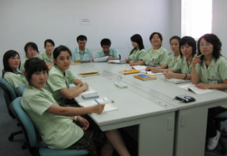
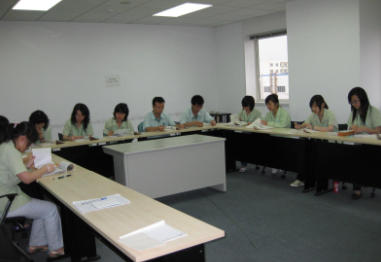

日本語教育
|
|
日本語教育
|
|
| 情報システム部 |
| 表紙へ戻る |
| 1.日本語授業紹介 | 上へ戻る | |||
|
【教育背景】
＜外部環境＞
日本出張のチャンスはどんどん増えている
＜内部環境＞
ほとんどのメンバーは日本語教育を受けましたが、レベルのバラツキが大きい
＜０８年度日本語教育振り返り＞
良かった点：メンバーの基礎日本語能力をアップした；
教えた内容は仕事に役割を果たした。（アンケート調査より）
悪かった点：会話、ヒアリングの練習は少なかった；
途中からやめた人が居た。
| ||||
|
【教育目的】
メンバーのレベルにより、ランクを付けて日本語教育を行い、
部全体の日本語レベルをさらに一歩向上させる |
||||
|
【教育担当手配】
＜日本語2級クラス＞
趙虹媛（スタッフ）
中学校から日本語を勉強し始め、
2004年日本語能力試験一級証明取得
2005年遼寧大学日本語学科卒業
2005年7月入社
2005年8月～今まで 通訳、スタッフ、日本語教育担当
2009年3月から、 日本語2級クラス教育担当
|
＜日本語3級クラス＞ 呂敏嬌（スタッフ） 2006年8月～2007年12月大連佳奇日本語学校で日本語を勉強し 2007年7月ビジネス日本語二級証明書取得 2008年12月日本語能力試験一級証明書取得 2008年6月入社 2008年7月～今まで 通訳、スタッフ、日本語教育担当 2009年3月から、 日本語3級クラス教育担当 | |||
| 2.日本語授業活動 | ||||
|
上へ戻る | |||
|
 【日本語2級クラス授業中】
中級修了レベル。
一般的なことがらについて、会話ができ、読み書きできる能力。
600時間程度学習が目安。
やや高度の文法・漢字（1,000字程度）・語彙（6,000語程度）が求められる。
|
||||
|
【日本語2級クラステキスト】
日本語中級程度の学習者を対象にした日本語教科書。
句型・語法約160項目、単語4700。全40課。
日本語能力試験模擬問題2級を収録。
「基本課文」と「応用課文」がある。
まず「基本課文」で重点文型を確認し、「応用課文」で発展的・応用的な会話を学ぶことができる。
|
||||
|
【日本語2級模擬問題集】
毎年実施する「日本語能力試験」２級の問題内容や形式を詳しく分析し、
最近の傾向にあった問題を選び、日本語能力試験対策にピッタリの問題集。
10回分の問題がつまっているだけでなく、試験対策のコツも収録。
|
||||
|
上へ戻る | |||
|
 【日本語3級クラス授業中】
初級修了レベル。
日常生活に役立つ会話ができ、簡単な文章が読み書きできる能力。
300時間程度学習が目安。
基本的な文法漢字（300字程度）・語彙（1,500語程度）が求められる。
|
||||
|
【日本語3級クラステキスト】
日本語初級程度学習者を対象にした日本語教科書。
句型・語法約110項目、語彙総数2900語。全部48課。
日本語能力試験模擬問題4級・3級を収録。
叙述形式の読解文、コミュニケーションに役立つひとこと、ピクチャーディクショナリー、
日本の文化紹介の４つのコーナーから構成されている。
|
||||